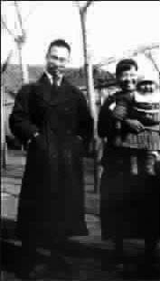

吴宓的1944
●漂泊京城
对吴宓先生而言，1944年是他生命里最逍遥的一年——这一年的夏天，他获得了当时国民政府教育部批准的一年带薪的国内假期，他接到这个消息是在1944年的9月初，而在此之前的8月20 日，恰恰是他50岁的生日。
这一年的春天，和所有颠沛流离到大后方的大学教授一样，吴宓先生在昆明的清华大学(西南联大)艰难而且庄严地为华夏土壤培养“知识的种子”。这个时候的抗日战争已经接近尾声，日本军队的飞机已经没有能力轰炸昆明，国民政府和中国共产党领导的抗日力量正在对日伪展开反击，原来的西南联合大学也悄悄地分裂，几所顶尖学府虽然名义上还在联大的招牌下，暗地里却各自为政，各自发展。这一年是吴宓先生在清华任教的第三十个年头，也是最后一年。
1944年的春天，吴宓先生在艰苦的环境里写成了三部英文版著作：《世界文学史大纲》《欧洲文学史大纲》和那部见解独到的《文学与人生》。也正是为了校订、修改和翻译成中文，以培育桃李为己任的吴宓先生才接受了校长梅贻琦的休假建议。1944年的9月23 日，吴宓先生离开了风景如画的昆明，经过贵阳来到遵义的浙江大学，会见他的哈佛同窗竺可桢、梅光迪。10月13日，吴宓先生从遵义出发去重庆，和茅以升、潘伯鹰会面后，马不停蹄地赶到成都的燕京大学，去见他亦师亦友、寤寐思之的陈寅恪。
关于吴宓、陈寅恪两位先生的友情，实在是中国学界的一段佳话。且不说他们二位先生留学海外期间的真挚友谊，且不说共事清华的峥嵘岁月，且不说1944年吴宓先生竟为了能够和陈寅恪先生做同事而留在燕京，且不说1961年吴宓先生南下广州拜会睽违16年的陈寅恪；即使到了山穷水尽的1971年，被摔断腿、被批斗到几近心理崩溃的吴宓先生冒着巨大的政治压力，给中山大学革委会写信，询问中山大学最大的“反动学术权威”陈寅恪的下落，信中说：“此间宓及陈寅恪先生之朋友、学生多人，对陈先生十分关怀、系念，急欲知其确切消息，并欲与其夫人唐稚莹女士通信，详询一切。”这封信在那个年代当然是石沉大海，让吴宓先生枉费牵挂，也让几十年后读到这封信的我辈潸然泪下。吴宓先生根本不知道，陈寅恪夫妇早在两年前就在悲愤中去世。吴陈二人在很多方面都惊人地相似，比如都育有三女，比如都离开北京南去，比如都把学术当作生命的根本，就连晚年的遭遇也惊人地一致，凄凉弃世。
1944年整个漫长的春天，吴宓先生都住在昆明大西门附近一栋老式木制楼房的阁楼里。每天从学校回来，吴宓先生要爬50多级楼梯，扶手已经很老了，像是经过了一百年，仿佛稍一用力就能拉倒。吴宓先生每次爬楼梯的时候心里总在嘀咕，“是它扶我还是我扶它？”战时的大后方没有电灯，晚上吴宓先生只能屏气吞声，慢慢地摸上楼去，像一条史书里的蠹鱼，没有丝毫的波澜。和昆明所有阁楼一样，屋子中间高四面低，吴宓先生进到屋里必须低头弓腰，才能过他一桌一椅一床一书架的教授日子，而他的三本英文著作，正是在这里写成的。
就在吴宓先生即将离开昆明的时候，几名研究生去看他，好客而又寒酸的吴宓先生带着弟子们上街下馆子。先生要来菜单，对照墙上悬挂的菜谱，亲手在点菜单子上写上菜名和单价，一笔一画，工工整整，认真地计算总数，把钱数算好，和自己口袋里的钱数相符、不超，这才交给堂倌下厨。
昆明的晚上有雾，师徒一行出得饭馆，光滑整齐的石板路在雾气里湿漉漉的。学生拥着老师，像一群依恋母亲的孩子。吴宓先生穿长衫，戴礼帽，携一根文明棍，在那样一个浓雾弥漫的晚上走在薪火相传的古道上，所有的喧哗和市声都被雾气清洗，没有人知道吴宓先生在想什么、看什么，每个人心中都是对先生无比的依恋和浓浓的离情。夜色渐深，两旁商铺的檐角偶尔有水滴滴落，打在同学的头上，打在吴宓先生的帽子上，打在后人记忆的湖面上，直到如今还在泛起层层涟漪，荡漾成1944年有关吴宓、有关清华、有关抗战、有关知识分子的种种回响。
(林涛摘自《散漫成文》)